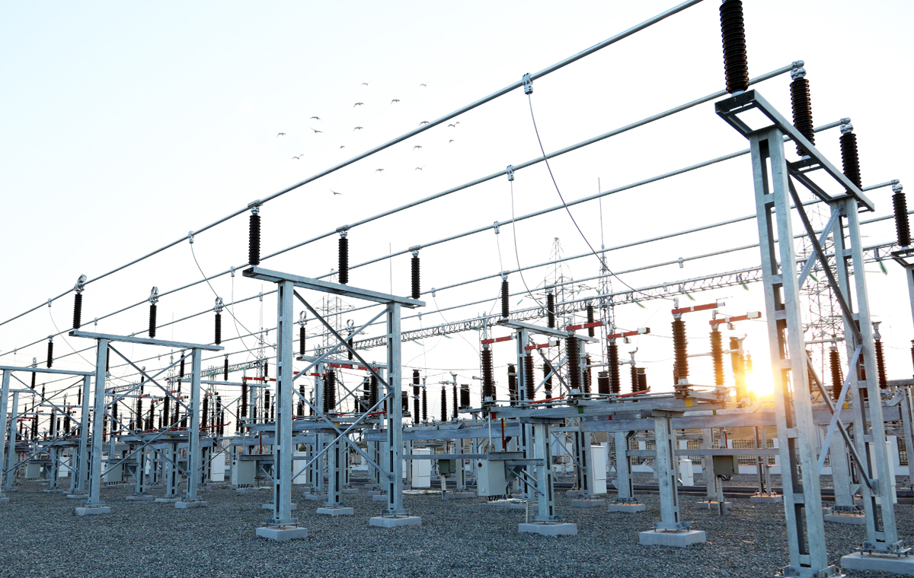
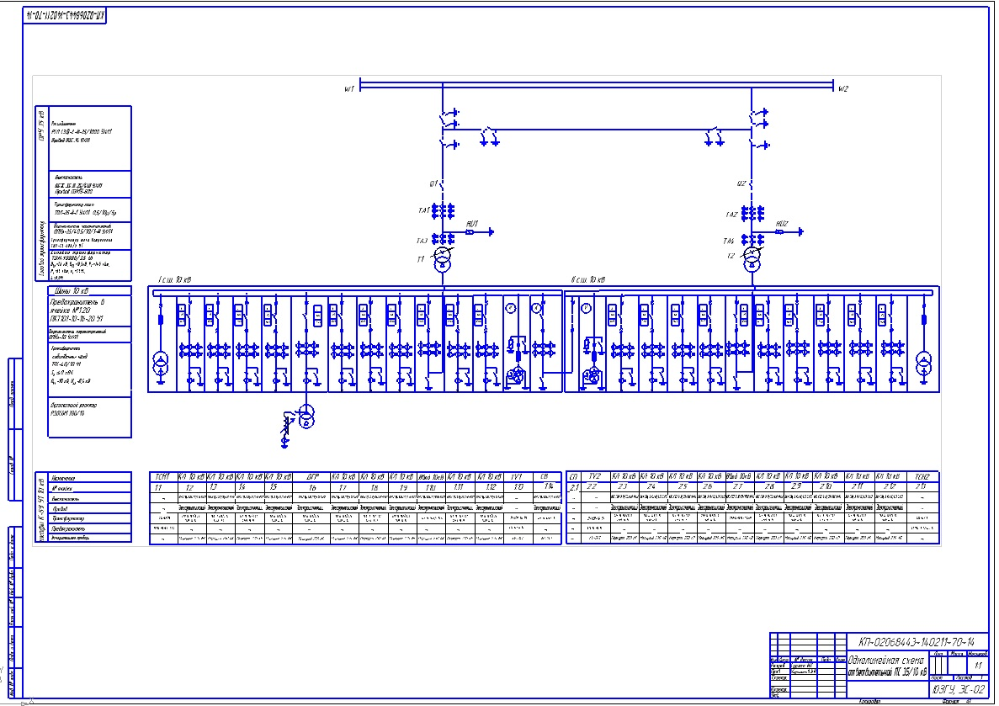

Про об'єкт
Розподільча підстанція РП-10 - це важливий елемент міської електричної мережі, призначений для приймання електроенергії з мережі 35 кВ, її перетворення та розподілу на рівні 10 кВ між споживачами. Такі об’єкти забезпечують живлення житлових кварталів, торгових зон та частини промислових підприємств, підвищуючи надійність електропостачання завдяки секціонуванню шин і можливості резервування ліній.
На підстанції застосовуються комутаційні апарати (вимикачі, роз’єднувачі), вимірювальні трансформатори струму/напруги, а також системи релейного захисту й автоматики. Релейний захист реагує на аварійні режими (короткі замикання, перевантаження) та відключає пошкоджену ділянку, мінімізуючи час знеструмлення. Для диспетчерського контролю можуть використовуватися засоби телемеханіки, що дозволяють відстежувати параметри в реальному часі.
Розподільча підстанція РП-10 є важливим елементом міської електроенергетичної інфраструктури та виконує функцію приймання електричної енергії з мережі напругою 35 кВ з подальшим її перетворенням і розподілом на рівні 10 кВ. Об'єкт забезпечує живлення житлових кварталів, адміністративних будівель, торговельних центрів та частини промислових споживачів міста Львова.
Підстанція працює за принципом двоступеневого розподілу електроенергії. Спочатку електроенергія надходить по повітряній або кабельній лінії напругою 35 кВ, після чого через трансформатор 35/10 кВ відбувається зниження напруги до рівня розподільчої мережі 10 кВ. Далі електроенергія передається через систему шин та фідерів до кінцевих споживачів.
Для забезпечення безпечної та надійної роботи використовуються вакуумні вимикачі, роз'єднувачі, трансформатори струму та напруги, а також сучасні системи релейного захисту та автоматики (РЗА). У випадку аварійних режимів (коротке замикання, перевантаження) захист миттєво відключає пошкоджену ділянку мережі, що мінімізує зону відключення.
Контроль параметрів роботи здійснюється за допомогою систем телемеханіки та автоматизованої системи комерційного обліку електроенергії (АСКОЕ). Це дозволяє в режимі реального часу відстежувати струм, напругу, навантаження та інші технічні показники.

Рис. 1 — Загальний вигляд РП-10
Технічні параметри
| Параметр | Значення | Одиниці |
|---|---|---|
| Номінальна потужність | 25 | МВА |
| Напруга ВН | 35 | кВ |
| Напруга НН | 10 | кВ |
| Кількість фідерів 10 кВ | 12 | шт |
| Тип комутаційних апаратів | Вакуумні вимикачі | - |
| Система керування | РЗА (релейний захист та автоматика) | - |
| Облік електроенергії | АСКОЕ / комерційний облік | - |
| Режим роботи | Цілодобово | - |
| Персонал (зміна) | 2–3 | особи |
| Рік модернізації | 2021 | рік |
Схема / обладнання

Контакти
Адреса: м. Львів, пр. Свободи
Телефон: +380 (95) 955-55-55
Email: ukrenergo@gmail.com
Режим роботи: цілодобово, без вихідних